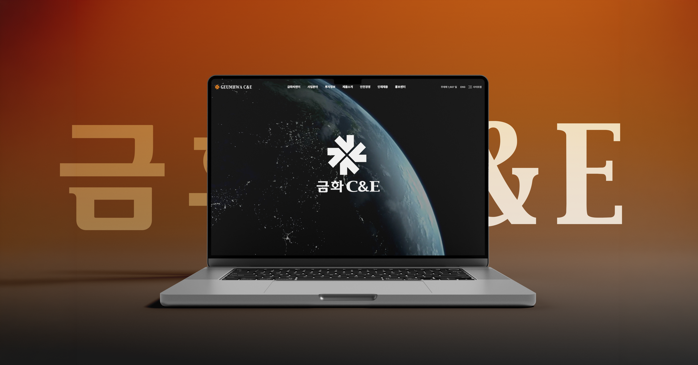
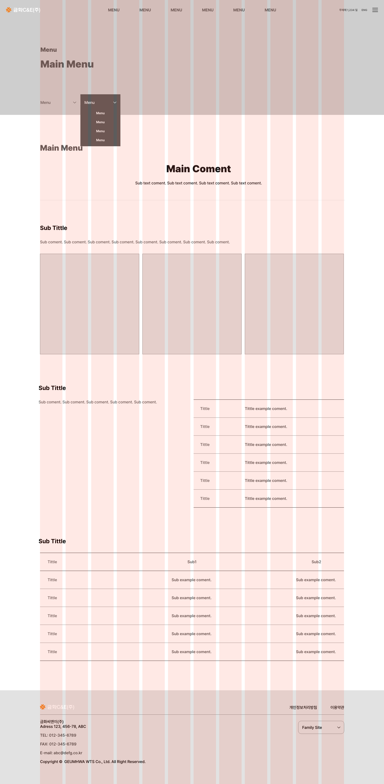
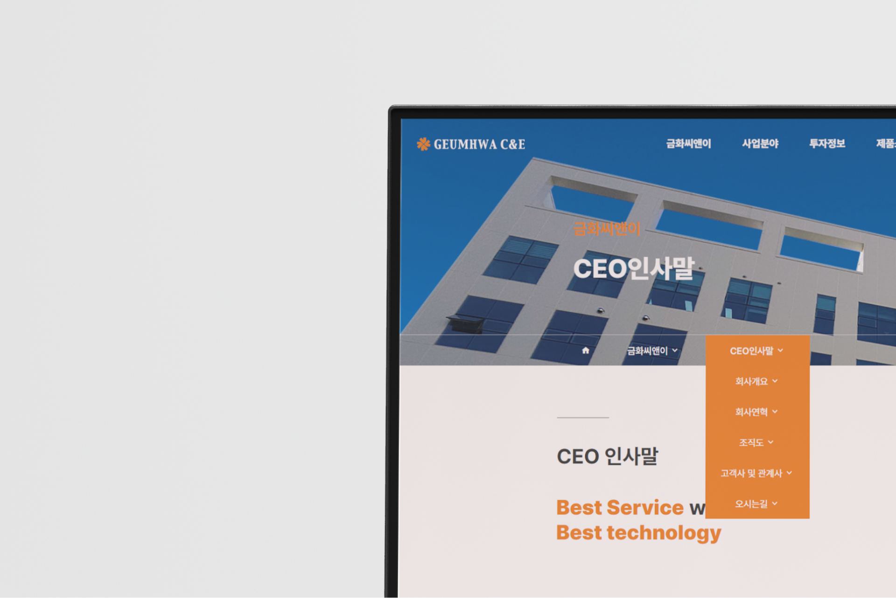
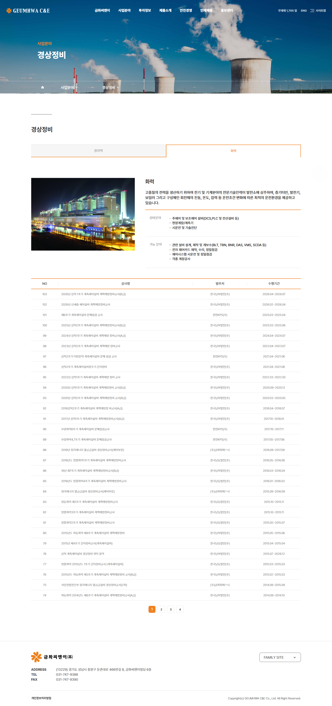
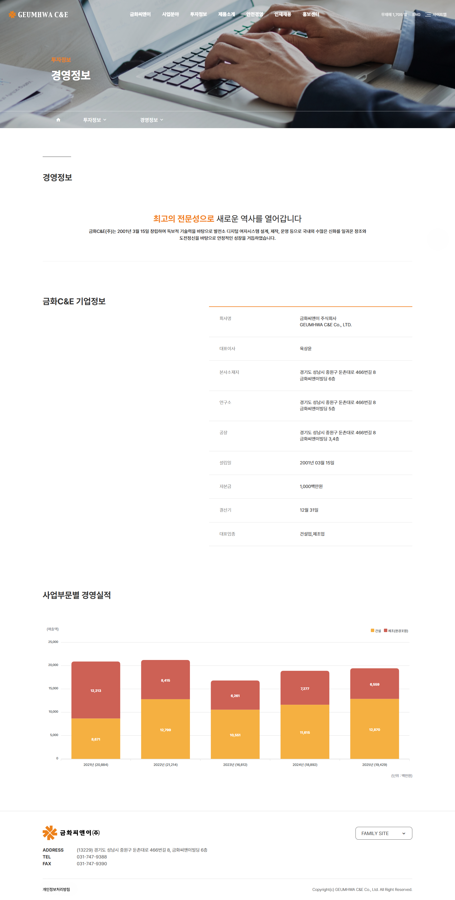
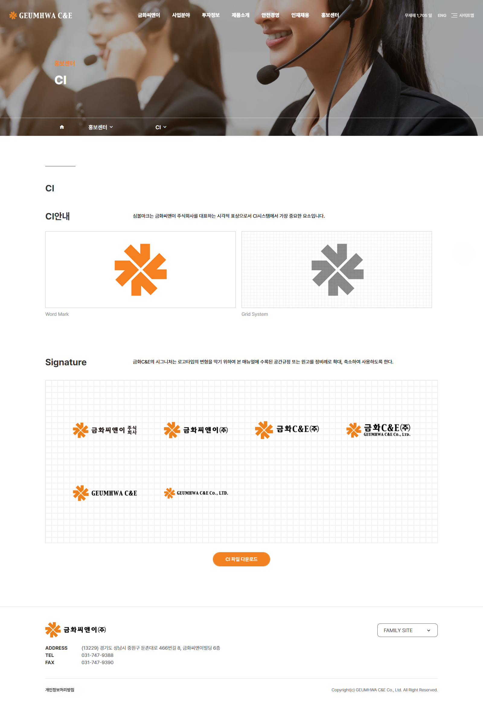
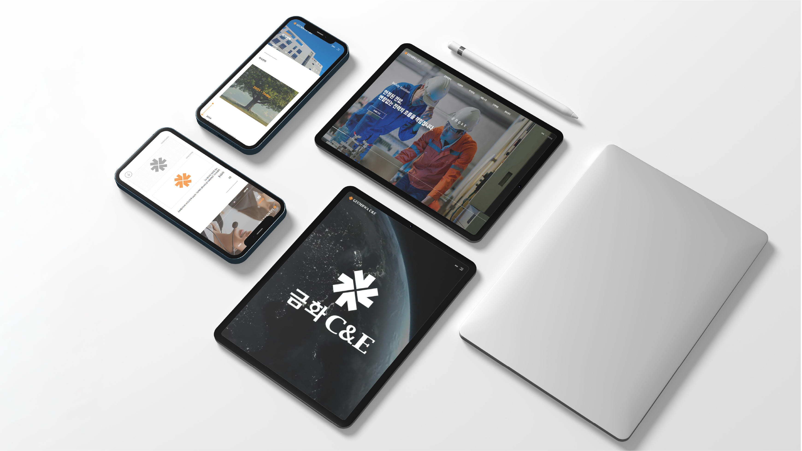

Overview
금화C&E 홈페이지 리뉴얼
본 프로젝트는 2000년대 초반에 구축되어 노후화된 B2B 거래처 중심의 회사 웹사이트를 현대적인 감각과 웹 표준에 맞춰 전면 리뉴얼한 작업입니다.
일반 소비자가 아닌 주요 비즈니스 파트너와 거래처를 타깃으로 하는 사이트 특성을 고려하여,
핵심 정보에 신속하게 접근할 수 있는 효율적인 동선과 신뢰감을 주는 비주얼 UX/UI를 구현하는 데 초점을 맞추었습니다.
초기 기본 메뉴 리스트 수령 이후의 모든 기획부터 정보 구조(IA) 설계, UI/UX 디자인, 그리고 웹 퍼블리싱(HTML/CSS/JS)에 이르기까지 전 과정을 100% 단독으로 수행하며 완성도 높게 프로젝트를 완수했습니다. 이를 통해 복잡한 기업 및 제품 정보를 체계적으로 정돈하여 거래처의 정보 탐색 시간을 단축시켰을 뿐만 아니라, 기획부터 최종 구현까지 스스로 이끌어가는 주도적인 프로젝트 관리 역량을 입증했습니다.
초기 기본 메뉴 리스트 수령 이후의 모든 기획부터 정보 구조(IA) 설계, UI/UX 디자인, 그리고 웹 퍼블리싱(HTML/CSS/JS)에 이르기까지 전 과정을 100% 단독으로 수행하며 완성도 높게 프로젝트를 완수했습니다. 이를 통해 복잡한 기업 및 제품 정보를 체계적으로 정돈하여 거래처의 정보 탐색 시간을 단축시켰을 뿐만 아니라, 기획부터 최종 구현까지 스스로 이끌어가는 주도적인 프로젝트 관리 역량을 입증했습니다.
기간
2024. 07 ~ 2024. 10
디자인
100%
퍼블리싱
100%
Task & Goal
고객사의 요청 사항은 무엇이 있었을까요?
브랜드 로고를 짧은 모션으로 노출하여, 브랜드 심볼을 각인
1/5 디자인 목표
인트로 디자인
인트로에 브랜드 로고를 짧은 모션으로 노출하여, 브랜드 아이덴티티를 강화하였습니다.
금화C&E
2/5 디자인 목표
디자인 시스템
디자인 시스템과 그리드 시스템을 바탕으로 정보의 시각적 위계를 정리하고 가독성 향상시켰습니다.
01 · COLOR
Primary Orange
브랜드 컬러인 #F28121를 포인트 컬러로 사용하여 브랜드 아이덴티티를 강조하였습니다.
Pure white#FFFFFF
Dark charcoal#333333
Medium gray#5c5c5c
Light gray#eeeeee
Primary Orange#F28121
03 · TYPOGRAPH
Pretendard
Pretendard폰트는 다양한 굵기를 제공하는 텍스트 최적화 폰트로 가독성 측면에서 뛰어나기 때문에 깔끔하고 명확한 정보전달에 부합하다고 생각하여 선택하였습니다.
회사개요
금화씨앤이
사업분야
금화C&E(주) · 2001년 03월 15일
설립일 · 대표이사
무재해 1,693 일
04 · COMPONENT
Button
Button
| Style | Default | Hover | Pressed |
|---|---|---|---|
| Primary | |||
| Outline |
02 · LAYOUT
Grid system
그리드 시스템을 이용한 데이터 테이블 모듈화를 통해 정보의 시각적 위계를 정리하고 실적 데이터의 가독성 향상을 높였습니다.


3/5 디자인 목표
로컬 네비게이션 바
사용자가 사이트 내에서 '내가 지금 어디에 위치해 있는지'
길을 잃지 않도록 위치 정보를 알려줍니다.
길을 잃지 않도록 위치 정보를 알려줍니다.
4/5 디자인 목표
네비게이션 디자인
제품 이미지 노출을 통해 직관적인 제품 인지 및 빠른 페이지 전환을 유도했습니다.


5/5 디자인 목표
반응형 디자인
1020px / 700px 기준의 반응형 CSS를 적용하여 다양한 디바이스 환경의 접근성을 최적화하였습니다.
Web Design



